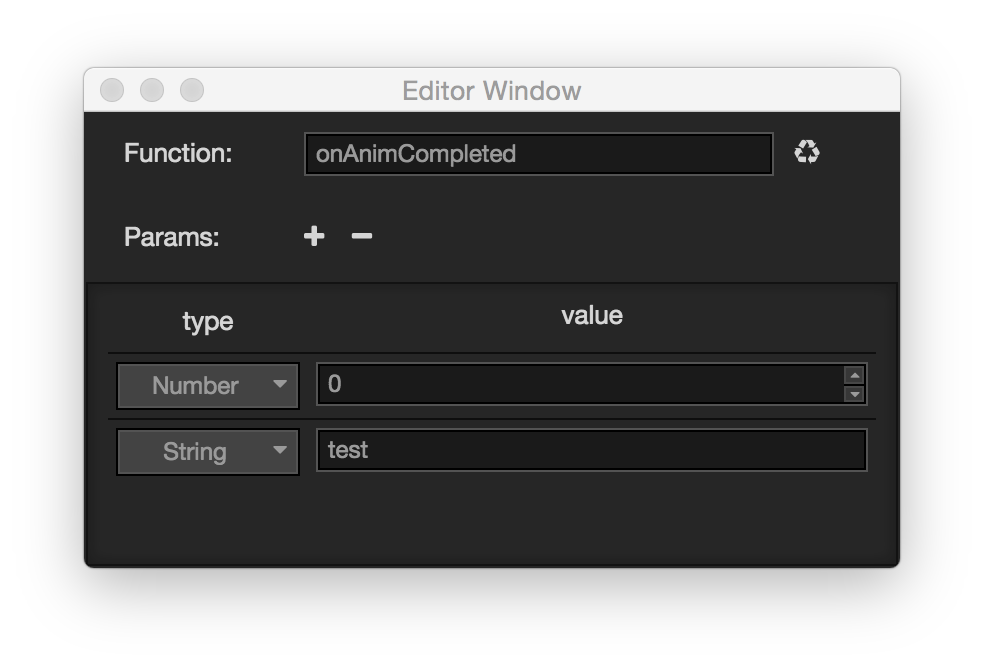

使用脚本控制动画
Animation 组件
Animation 组件提供了一些常用的动画控制函数，如果只是需要简单的控制动画，可以通过获取节点的 Animation 组件来做一些操作。
播放
var anim = this.getComopnent(cc.Animation);
// 如果没有指定播放哪个动画，并且有设置 defaultClip 的话，则会播放 defaultClip 动画
anim.play();
// 指定播放 test 动画
anim.play('test');
// 指定从 1s 开始播放 test 动画
anim.play('test', 1);Animation 对一个动画进行播放的时候会判断这个动画之前的播放状态来进行下一步操作。 如果动画处于：
- 停止 状态，则 Animation 会直接重新播放这个动画
- 暂停 状态，则 Animation 会恢复动画的播放，并从当前时间继续播放下去
- 播放 状态，则 Animation 会先停止这个动画，再重新播放动画
var anim = this.getComopnent(cc.Animation);
// 播放第一个动画
anim.play('position-anim');
// 播放第二个动画
anim.play('rotation-anim');Animation 是支持同时播放多个动画的，播放不同的动画并不会影响其他的动画的播放状态，这对于做一些复合动画比较有帮助。
暂停 恢复 停止
var anim = this.getComopnent(cc.Animation);
anim.play('test');
// 指定暂停 test 动画
anim.pause('test');
// 暂停所有动画
// anim.pause();
// 指定恢复 test 动画
anim.resume('test');
// 恢复所有动画
// anim.resume();
// 指定停止 test 动画
anim.stop('test');
// 停止所有动画
// anim.stop();暂停，恢复， 停止 几个函数的调用比较接近。
暂停 会暂时停止动画的播放，当 恢复 动画的时候，动画会继续从当前时间往下播放。 而 停止 则会终止动画的播放，再对这个动画进行播放的时候会重新从开始播放动画。
设置动画的当前时间
var anim = this.getComopnent(cc.Animation);
anim.play('test');
// 设置 test 动画的当前播放时间为 1s
anim.setCurrentTime(1, 'test');
// 设置所有动画的当前播放时间为 1s
// anim.setCurrentTime(1);你可以在任何时候对动画设置当前时间，但是动画不会立刻根据设置的时间进行状态的更改，需要在下一个动画的 update 中才会根据这个时间重新计算播放状态。
AnimationState
Animation 只提供了一些简单的控制函数，希望得到更多的动画信息和控制的话，需要使用到 AnimationState。
AnimationState 是什么？
如果说 AnimationClip 作为动画数据的承载，那么 AnimationState 则是 AnimationClip 在运行时的实例，它将动画数据解析为方便程序中做计算的数值。 Animation 在播放一个 AnimationClip 的时候，会将 AnimationClip 解析成 AnimationState。 Animation 的播放状态实际都是由 AnimationState 来计算的，包括动画是否循环，怎么循环，播放速度 等。
获取 AnimationState
var anim = this.getComopnent(cc.Animation);
// play 会返回关联的 AnimationState
var animState = anim.play('test');
// 或是直接获取
var animState = anim.getAnimationState('test');获取动画信息
var anim = this.getComopnent(cc.Animation);
var animState = anim.play('test');
// 获取动画关联的clip
var clip = animState.clip;
// 获取动画的名字
var name = animState.name;
// 获取动画的播放速度
var speed = animState.speed;
// 获取动画的播放总时长
var duration = animState.duration;
// 获取动画的播放时间
var time = animState.time;
// 获取动画的重复次数
var repeatCount = animState.repeatCount;
// 获取动画的循环模式
var wrapMode = animState.wrapMode
// 获取动画是否正在播放
var playing = animState.isPlaying;
// 获取动画是否已经暂停
var paused = animState.isPaused;
// 获取动画的帧率
var frameRate = animState.frameRate;从 AnimationState 中可以获取到所有动画的信息，你可以利用这些信息来判断需要做哪些事情。
设置动画播放速度
var anim = this.getComopnent(cc.Animation);
var animState = anim.play('test');
// 使动画播放速度加速
animState.speed = 2;
// 使动画播放速度减速
animState.speed = 0.5;speed 值越大速度越快，值越小则速度越慢
设置动画 循环模式 与 循环次数
var anim = this.getComopnent(cc.Animation);
var animState = anim.play('test');
// 设置循环模式为 Normal
animState.wrapeMode = cc.WrapMode.Normal;
// 设置循环模式为 Loop
animState.wrapeMode = cc.WrapMode.Loop;
// 设置动画循环次数为2次
animState.repeatCount = 2;
// 设置动画循环次数为无限次
animState.repeatCount = Infinity;AnimationState 允许动态设置循环模式，目前提供了多种循环模式，这些循环模式可以从 cc.WrapMode 中获取到。 如果动画的循环类型为 Loop 类型的话，需要与 repeatCount 配合使用才能达到效果。 默认在解析动画剪辑的时候，如果动画循环类型为：
- Loop 类型，repeatCount 将被设置为 Infinity, 即无限循环
- Normal 类型，repeatCount 将被设置为 1
动画事件
在动画编辑器里支持可视化编辑帧事件 (如何编辑请参考 这里 )，在脚本里书写动画事件的回调也非常简单。 动画事件的回调其实就是一个普通的函数，在动画编辑器里添加的帧事件会映射到动画根节点的组件上。
实例：
假设在动画的结尾添加了一个帧事件，如下图： 
那么在脚本中可以这么写：
cc.Class({
extends: cc.Component,
onAnimCompleted: function (num, string) {
console.log('onAnimCompleted: param1[%s], param2[%s]', num, string);
}
});将上面的组件加到动画的 根节点 上，当动画播放到结尾时，动画系统会自动调用脚本中的 onAnimCompleted 函数。
动画系统会搜索动画根节点中的所有组件，如果组件中有实现动画事件中指定的函数的话，就会对它进行调用，并传入事件中填的参数。
继续前往下一章 组件参考。